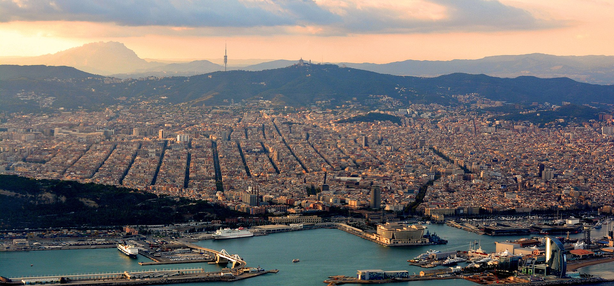
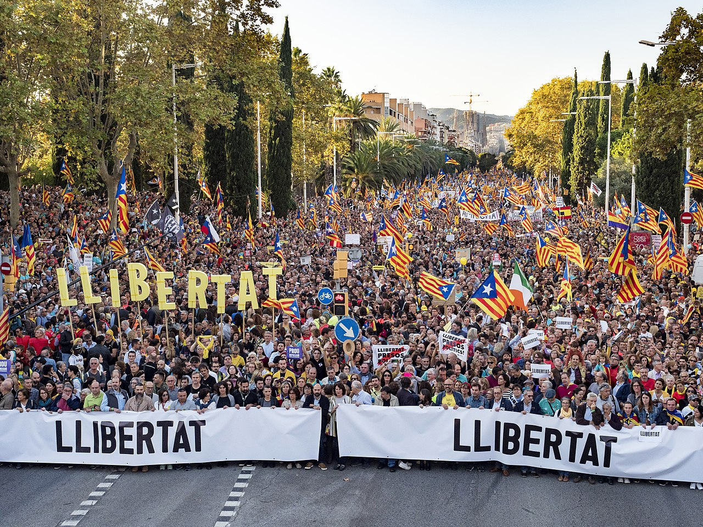

Barcelona
Barcelona (/ˌbɑːrsəˈloʊnə/ BAR-sə-LOH-nə, Catalan: [bəɾsəˈlonə], Spanish: [baɾθeˈlona]) is a city on the coast of northeastern Spain. It is the capital and largest city of the autonomous community of Catalonia, as well as the second most populous municipality of Spain. With a population of 1.6 million within city limits,[7] its urban area extends to numerous neighbouring municipalities within the Province of Barcelona and is home to around 4.8 million people,[3] making it the fifth most populous urban area in the European Union after Paris, the Ruhr area, Madrid, and Milan.[3] It is one of the largest metropolises on the Mediterranean Sea, located on the coast between the mouths of the rivers Llobregat and Besòs, and bounded to the west by the Serra de Collserola mountain range, the tallest peak of which is 512 metres (1,680 feet) high.
Founded as a Roman city, in the Middle Ages Barcelona became the capital of the County of Barcelona. After joining with the Kingdom of Aragon to form the confederation of the Crown of Aragon, Barcelona, which continued to be the capital of the Principality of Catalonia, became the most important city in the Crown of Aragon and the main economic and administrative centre of the Crown, only to be overtaken by Valencia, wrested from Arab domination by the Catalans, shortly before the dynastic union between the Crown of Castile and the Crown of Aragon in 1492. Barcelona has a rich cultural heritage and is today an important cultural centre and a major tourist destination. Particularly renowned are the architectural works of Antoni Gaudí and Lluís Domènech i Montaner, which have been designated UNESCO World Heritage Sites. The city is home to two of the most prestigious universities in Spain: the University of Barcelona and Pompeu Fabra University. The headquarters of the Union for the Mediterranean are located in Barcelona. The city is known for hosting the 1992 Summer Olympics as well as world-class conferences and expositions and also many international sport tournaments.
Barcelona is a major cultural, economic, and financial centre in southwestern Europe,[8] as well as the main biotech hub in Spain.[9] As a leading world city, Barcelona's influence in global socio-economic affairs qualifies it for global city status (Beta +).[10]
Barcelona is a transport hub, with the Port of Barcelona being one of Europe's principal seaports and busiest European passenger port,[11] an international airport, Barcelona–El Prat Airport, which handles over 50 million passengers per year,[12] an extensive motorway network, and a high-speed rail line with a link to France and the rest of Europe.[13]
Recent History
The death of Franco in 1975 brought on a period of democratisation throughout Spain. Pressure for change was particularly strong in Barcelona, which considered that it had been punished during nearly forty years of Francoism for its support of the Republican government.[55] Massive, but peaceful, demonstrations on 11 September 1977 assembled over a million people in the streets of Barcelona to call for the restoration of Catalan autonomy. It was granted less than a month later.[56]
The development of Barcelona was promoted by two events in 1986: Spanish accession to the European Community, and particularly Barcelona's designation as host city of the 1992 Summer Olympics.[57][58] The process of urban regeneration has been rapid, and accompanied by a greatly increased international reputation of the city as a tourist destination. The increased cost of housing has led to a slight decline (−16.6%) in the population over the last two decades of the 20th century as many families move out into the suburbs. This decline has been reversed since 2001, as a new wave of immigration (particularly from Latin America and from Morocco) has gathered pace.[59]
In 1987, an ETA car bombing at Hipercor killed 21 people. On 17 August 2017, a van was driven into pedestrians on La Rambla, killing 14 and injuring at least 100, one of whom later died. Other attacks took place elsewhere in Catalonia. The Prime Minister of Spain, Mariano Rajoy, called the attack in Barcelona a jihadist attack. Amaq News Agency attributed indirect responsibility for the attack to the Islamic State of Iraq and the Levant (ISIL).[60][61][62] During the 2010s, Barcelona became the focus city[citation needed] for the ongoing Catalan independence movement, its consequent standoff between the regional and national government and later protests.[63]